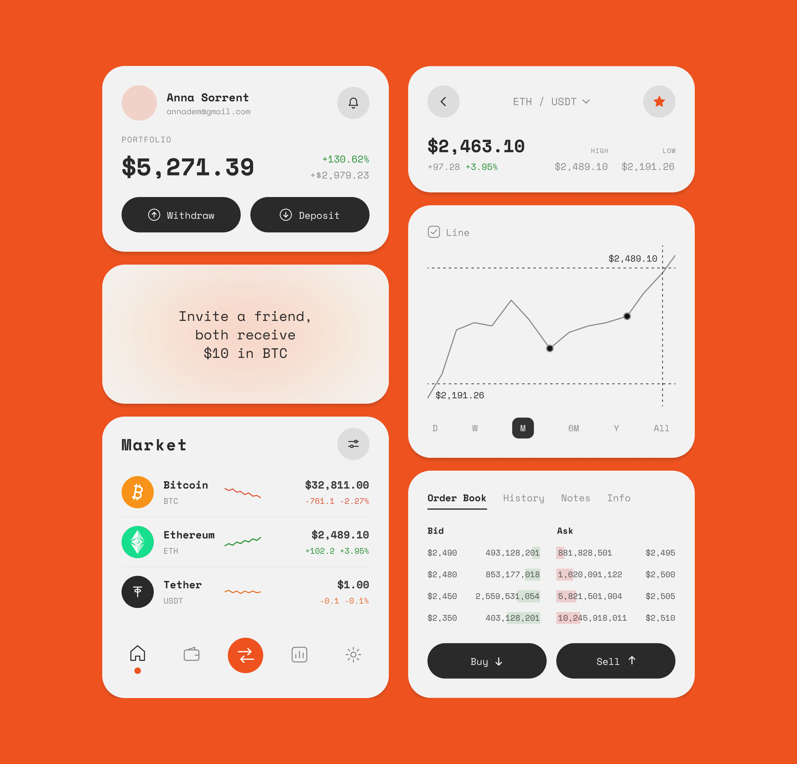

Crypto Dashboard
Концепт мобильного крипто-приложения с фокусом на ясность и спокойное чтение цифр. Собрала ключевые модули в единую систему карточек: портфель с балансом и быстрыми действиями, маркет с котировками, интерактивный график цены и ордербук с покупкой и продажей — на монохромной сетке с моноширинным шрифтом и одним акцентным цветом.A concept for a mobile crypto app focused on clarity and calm reading of numbers. I brought the key modules into one card system: a portfolio with balance and quick actions, a market with quotes, an interactive price chart and an order book with buy and sell — on a monochrome grid with a monospaced typeface and a single accent color.